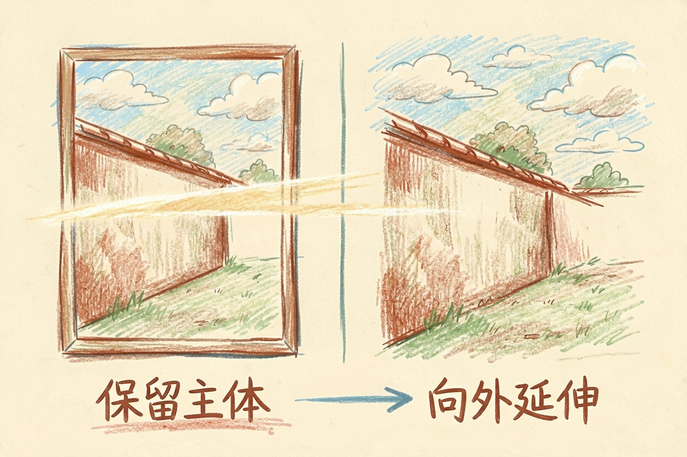
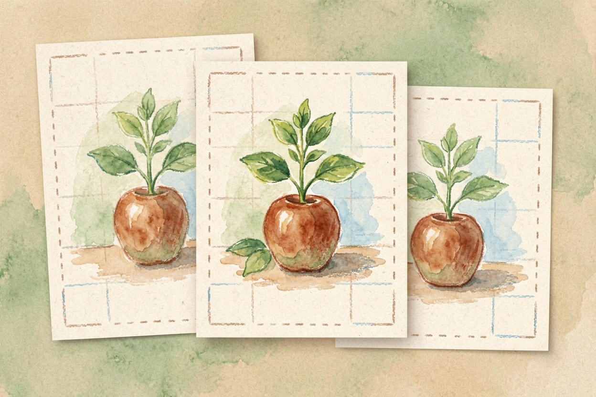
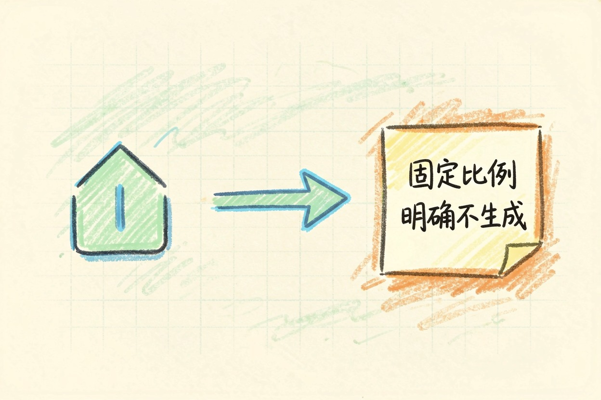
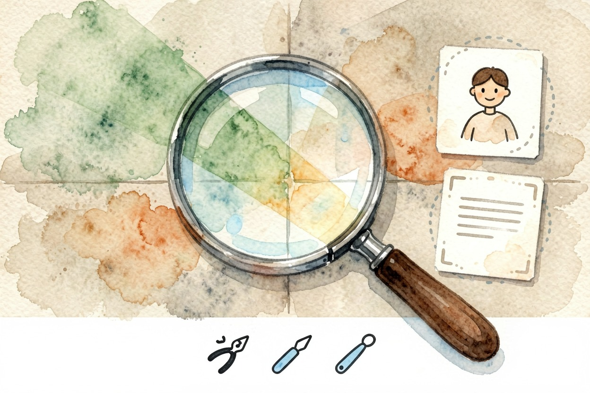

用 AI 扩图改尺寸？一张图适配多个平台 — Learntide
一张图要凑齐好几种平台比例，反复重拍太折腾，让工具把画幅延展补齐更省事。
ai扩图是什么：把图撑大而非硬拉

ai扩图，是让模型先读懂画面，再向外补出合理的延伸内容。一张竖拍人像，左右各补一块背景，就变成横构图。核心是多出那部分要接得上，不能硬凑。
传统改尺寸只会拉伸或裁切。拉伸让主体变形。裁切丢掉信息。ai扩图走另一条路：保留主体，向外生长。这正是它适合多平台分发的原因。
扩图也有边界。画面边缘信息太少时，模型只能凭空编。原图要有可延续的纹理，效果才稳。
哪些场景真的用得上

发朋友圈要竖图。发公众号封面要横图。发电商要方图。同一张产品照，三种比例三种裁法，主体常被切掉。用扩图把画幅补齐，比反复重拍省事。
做海报底图也常用。素材偏小时，向外延展能拿到更协调的背景，文字区域也更好排。旅游照、建筑照延展效果最稳，因为纹理规律，好接边。
人像要谨慎。头发、手指、饰品这些细节，模型容易补歪。先扩背景，后做局部修复，比一次性大改更可控。
电商主图最受益。一套商品拍一次，靠扩图变出横版、竖版、方版三套物料。价格标签区要留白，别让模型擅自填字。
一步步操作：扩图工作流

大多数工具流程相似。先上传原图。再框选要延展的方向和范围。最后给一句约束提示词。下面是一段可直接用的指令：
任务：对下方图片做 ai扩图（outpainting）。
延展方向：左右各 +40%，上下各 +15%
补充内容：保持现有背景风格，延伸地面、墙面与天空，不要出现新人物
主体保护：中间人物与商品完全不动，边缘不得裁切
输出：单张 PNG，分辨率不低于原图
风格：延续原图光线与色调，接缝处自然过渡填好后发给支持扩图的工具即可。不同产品的按钮名字不一样，但「选方向、定范围、写约束」这三步通用。
上传前先整理原图。背景越干净，延展越自然。主体别贴边拍，留点余量，模型才好接着画。
提示词怎么写才不翻车

约束要写「不做什么」。比如「不要加文字」「不要出现动物」「保持原色调」。只说「帮我扩图」太松，模型容易自作主张。
方向和比例要写死。写「左右各延展 30%」比「稍微扩一点」稳。比例偏差会让后续排版对不齐。
给参考也很重要。若想接某类背景，附一句「类似清晨街道的冷色调」能拉回风格。细节越多，翻车越少。
颜色也要点名。写明「暖光」「低饱和」，比说「好看点」有效。模型只能照字面执行。
常见坑点与收尾建议
接缝是最常出的问题。延伸区和原图光线不一致，会出现一条亮带。把提示词里的「光线延续」写明确，或扩完用修补工具压一下接缝。
人物畸变要返工。发现手或脸变形。别将就。缩小延展范围，只补背景，再单独修人物，通常更顺。
文字类图片别交给它。海报上的字，模型多半会写歪，这类需求另有专门做法。导出前放大检查。瑕疵在缩略图里看不见，放大就露馅。
ai扩图只管画面延伸，别指望它顺手把字排正。
本文信息核对于 2026-08-08。AI 产品的价格、免费额度与功能变动频繁，实际以各工具官网当前说明为准。